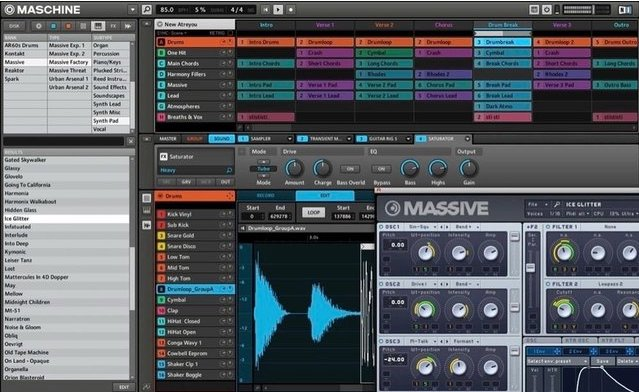

Welcome back to part two of my introductory article on music equipment reviews for building a home studio. This is for any home producer looking to get started or cut costs and build a budget minded music production studio at home. In Part 1 I discussed the recommended method to save money doing what you love, while still giving yourself a way to master your tracks and productions.
If you have not read Part 1, click --HERE-- now. I recommend doing so, as it is a fantastic foundation and a great starting point for any musician looking to compose music and produce mastered tracks for cheap.
And if you have not gone and followed us on Facebook you can do that -->HERE<-- If you like what you see here make sure to share on social media down at the bottom and leave comments with questions or discussion topics below.
This next part is in my opinion the core aspect of any home music studio and the main component to allowing you to make money at home doing what you love. I am referring to the main software suite and MIDI or other hardware controller used to actually create your music from the comfort of your bedroom. I began with this program almost half a decade ago. When I bought it, I was also brand new to making music from home.
I Present to you the Native Instruments Maschine MKII
WORKFLOW, WORKFLOW, WORKFLOW>
I can't stress it enough. The ability to optimize your workflow will allow you to focus more on creation instead of setting up and resetting up. The Maschine MKII by Native Instruments, is to me the best option to purchase for any level of expertise. The Native Instruments Maschine has the ability to do absolutely whatever you want it to, but it is simple and straightforward enough for even the newest of music producers.
I can't stress it enough. The ability to optimize your workflow will allow you to focus more on creation instead of setting up and resetting up. The Maschine MKII by Native Instruments, is to me the best option to purchase for any level of expertise. The Native Instruments Maschine has the ability to do absolutely whatever you want it to, but it is simple and straightforward enough for even the newest of music producers.
The Native Instruments Maschine controller is a fully compatible as a MIDI controller for any program that allows you to custom map a controller for external use. That means that even though the Maschine software is more than enough to accomplish anything you want with music production, it is versatile enough to serve you throughout whatever programs you use additionally down the road.
Native Instruments Maschine Software 2.0
As a stand-alone program for audio production Maschine does just that. It holds its own against the likes of industry giants like Ableton and Image-Line (the creators of FL Studio). It comes out of the box with the industry leading synthesizer plug-in Massive. This alone is a few hundred dollar plug-in on its own.
It comes with a digital sound library over 22GB large! Included in this bundle is every possible sound or sample you can need to make countless albums. The added ability to alter each individual sound makes it so that realistically you could never spend a cent on sound libraries again.
Audio Engine Specs
- Allows for unlimited groups and the ability to add effects directly to the sounds.
- Has the ability to be used as a VST or AU plug-in in addition to a stand alone program.
- New supported effects such as sidechaining for a stuttered drum sound.
- Has built in mixer to allow mastering live during production.
- Plugin strip along the bottom for easy access to active plugins.

- Includes drum synths with the ability to tailor a completely custom drum sound from scratch or template.
- Convenient and easy to follow menu structure for choosing and loading samples and instruments.
- Fully functional sampler with slicing time stretching and pitch matching abilities
Native Instruments Maschine MKII Controller

The Maschine MKII is the best controller for a beginning producer as it comes packed to the brim with goodies. It uses ultra-fast processors to deliver information and sound in real time.
- Two screens on top reflect the current menu on the software allowing you to increase workflow by relying less on the computer and controller back and forth during production.
- Easy to use tagged file system makes finding and loading the sound right from the Maschine a breeze.
- No step knobs allow for easy altering of loaded sounds plugins
- Able to color coordinate each pad to reflect whatever you want
Think being able to look down and know instantly on any group which are synth, bass, snare, cymbal, kick etc.
Native Instruments Maschine MKII Final Thoughts
Price: $599.99 here on Amazon
- Easy workflow to browsing, loading, and tweaking
- Arrange and automate all samples and plug-in parameters from the hardware improving output
- Ability to customize button mapping for use as MIDI controller for other software
- Pads are multi-colored to allow color coding sounds, groups, patterns, and scenes
- Includes Komplete Elements software add-on
I am and have been a huge fan of the capabilities the Maschine has. It was the first controller I invested in and was the best choice I made financially when starting out as a music producer. I love the ease of ability to slice samples and create entirely new productions in half the time.
The Native Instruments Maschine MKII will become your most valuable possession within your home studio. The ability it has and the streamlining it provides are unparalleled. For just about half of our budget we have taken care of typically the two most expensive items in beginning any home music production studio.
So head over and check these out now as your music can't wait! Then make sure to like, share and comment below.
Discussion topic below...
What was your first controller and what do you wish it had different or added?
Continue on to Part 3